Reference Architecture: Batch Processing Platform on GKE
Purpose
This reference architecture is intended to help platform administrators, cloud architects, and operations professionals deploy a batch processing platform on Google Kubernetes Engine (GKE). This document features GKE in Standard mode, using Kueue to manage resource quotas and borrowing rules between multiple tenant teams sharing the cluster to run their batch workloads in a fair, cost efficient and performant way. Best practices for running batch workloads on GKE discusses many recommendations that are implemented in this document.
Overview
Traditionally, batch platforms have two main user personas, developers and platform administrators:
-
A developer submits a Job specifying the program, the data to be processed, and requirements for the Job.
-
A platform administrator manages and delivers an efficient and reliable batch processing platform to the developers.
Let's assume we have four teams of developers (team-a, team-b, team-c, team-d) who want to share a GKE cluster to run their batch machine learning training workloads. Additionally, team-a and team-b share billing so would like to use each other's unused resource quota for their workloads. team-c and team-d have a similar agreement. The Organization has purchased a Committed Use Discount consumed via reservations and would like to maximize the utilization of their reservations before bursting into On-demand or Spot VMs.
To support these teams, the platform administrator would create a GKE cluster and configure it with Google published good practices for building batch platforms on GKE, in addition to their specific organizational best practices.
This reference architecture illustrates an example of a batch platform on GKE that can support multiple teams:
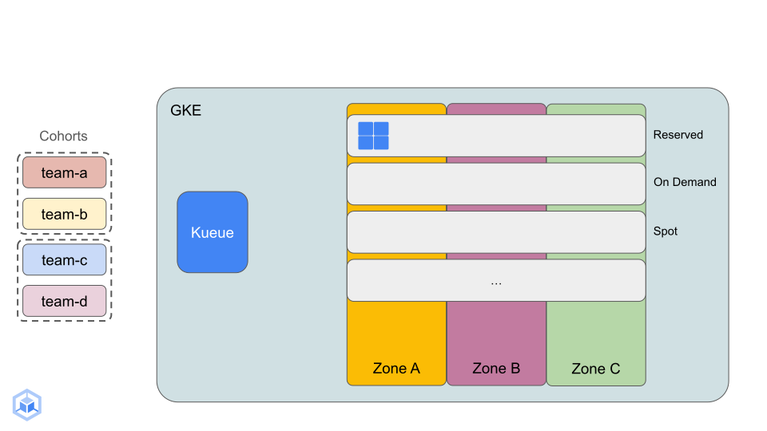
-
A regional GKE cluster with Node Auto Provisioning enabled, private nodes and Cloud NAT for outbound external access. A Cloud Monitoring dashboard tracking GPU utilization metrics is also created.
-
The cluster is configured with user defined node pools and is capable of creating auto-provisioned GPU node pools based on workload requirements:
-
Reserved node pool consuming zonal NVIDIA L4 GPU VM reservations.
-
Autoscaling On-demand node pool with NVIDIA L4 GPU for high-priority Jobs spilling over from reservations.
-
Autoscaling Spot node pool with NVIDIA L4 GPU for failure tolerant or low-priority workloads spilling over from reservations.
-
Compactly placed, auto-provisioned Spot node pools for low latency communication between workload Pods consuming NVIDIA A100 GPUs.
-
-
Four teams (
team-a,team-b,team-c,team-d) each with their own namespace on the cluster, with Workload Identity established. -
PriorityClasses defined for low-priority (default), high-priority and compactly placed Jobs. Incoming high-priority Jobs can preempt running low-priority Jobs to reclaim reserved resources.
-
Kueue is configured such that:
-
Each team has a
high-priority queue, alow-priorityqueue and acompact-placementqueue to which Jobs are submitted. -
Four ResourceFlavors defined; one each for
reserved,on-demandandspotG2 VMs with NVIDIA L4 GPUs, and one forspotA2 VMs with NVIDIA A100 GPUs that are compactly-placed. -
Prometheus and Grafana are installed on the cluster for monitoring Kueue.
-
-
This reference architecture shows the teams submitting the following workloads:
-
Distributed (multi-GPU, multi-host) machine learning model training using PyTorch and the mnist dataset, using Kubernetes Jobs in Indexed mode. See original example published here. This workload is used to showcase Kubernetes Job priority and preemption behavior using L4 GPUs and to show how to setup A100 GPUs in compact placement for multi-node training:
-
Low-priority Jobs: Jobs that don't specify a PriorityClass will get this default PriorityClass set to them. Kueue is configured to allow these Jobs to run on reserved VMs or Spot G2 VMs. If there is no room in or if a low-priority Job gets preempted from the reserved node pool, Kueue will evaluate them for other ResourceFlavors and will assign them the Spot G2 VM ResourceFlavor. In this example, each low-priority Job will have two Pods, each consuming two L4 GPUs.
-
High-priority Jobs: Jobs specifying this PriorityClass will preempt any low-priority Jobs running on reserved VMs. Any overflow high-priority Jobs will trigger scale-up in the On-demand node pool. In this example, each high-priority Job will have two Pods, each consuming two L4 GPUs.
-
Compactly placed Jobs: When admitted by Kueue, these Jobs will trigger GKE Node Auto Provisioning to create node pools purpose built for each of the Jobs, with nodes placed in close physical proximity to each other for low latency communication. In this example, each compactly placed Job will have two Pods, each consuming a single A100 GPU.
-
-
Distributed (multi-GPU, multi-host) machine learning training using PyTorch and the mnist dataset, using the Kubernetes JobSet API. In this example, JobSet automatically creates the headless ClusterIP service for all the workers in the Job to communicate with each other. See original example published here.
Prerequistes
-
This reference architecture has been tested on Cloud Shell which comes preinstalled with Google Cloud SDK that is required to complete this guide.
-
Since a recent change in Grafana, services that run behind a reverse proxy cannot directly access metrics data. Port-forwarding from Cloud Shell, you would not be able to view Kueue metrics in Grafana. For a portion of this guide, you will be doing a port-forward from your local machine and for this, your local machine must have gcloud CLI available.
-
It is recommended to start the guide in a fresh project since the easiest way to clean up once complete is to delete the project. See here for more details.
-
This guide requires a number of different GCP Quotas (~60 L4 GPUs, ~30 Spot A100 GPUs and up to 600 CPU cores) in the region of your choosing. Please visit the IAM -> Quotas page in the context of your project, region and zone to request additional quota before proceeding with this guide. This document can help you find the appropriate regions and zones where the G2 (with NVIDIA L4 GPUs) and A2 (with NVIDIA A100 GPUs) VM families are available. For example, the zones us-central-a, us-central1-b and us-central-c all have both VM families available.
Deploy Google Cloud resources using Cloud Build and Terraform.
- Export the required environment variables; replace the value of
YOUR_PROJECT_IDwith that of a fresh project you created for this tutorial,YOUR_REGIONwith the name of your chosen Google Cloud region (eg. us-central1) andYOUR_ZONEwith one of the zones in your chosen region (eg. us-central1-c).
bash
export PROJECT_ID=YOUR_PROJECT_ID
export REGION=YOUR_REGION
export ZONE=YOUR_ZONE
- Clone this repo, switch to the appropriate subdirectory and run the
create-platform.shscript. The rest of this step enables the required APIs, creates an IAM policy binding for the Cloud Build service account, creates an Artifact Registry to host the Cloud Build container images and submit a Cloud Build job to create the required Google Cloud resources using Terraform. For more details seecreate-platform.sh. Navigate to the Cloud Build page in the Google Cloud console to view status of the build, ensure you're in the context of the correct project.
bash
cd $HOME && \
git clone https://github.com/GoogleCloudPlatform/ai-on-gke.git && \
cd ai-on-gke/best-practices/gke-batch-refarch && \
./create-platform.sh
- While the build runs, head over to the Kubernetes Engine page in the console. You can see the cluster being created and configured by the steps running in Cloud Build.
a. The Setup GKE step will create the GKE cluster with a default node pool for system pods, a statically sized reserved node pool with four g2-standard-24 reserved VMs with two Nvidia L4 accelerators each, one auto-scaled (0 - 24 nodes) On-demand node pool for spill-over high-priority Jobs, and one auto-scaled (0 - 36 nodes) Spot node pool for spill-over low-priority Jobs. For more details, or to modify the infrastructure deployed in this document see 01_gke/main.tf in this repository.
b. Once the cluster is ready, the next steps deploy the recommended DaemonSet to install GPU drivers, and system resources for Kueue and JobSet are installed.
c. The Deploy Manifests: Priority Classes, Teams and Kueue configuration step establishes default, high and compact PriorityClasses to showcase preemption of lower priority workloads by higher priority workloads for reserved resources. This step deploys four team manifests one for each of team-a, team-b, team-c and team-d including Namespaces and Kubernetes Service Accounts to be used for Workload Identity. In addition, this step configures Kueue such that each team gets a high priority queue, a low priority queue and a compact placement queue with the ability to specify nominalQuota and borrowingLimit for the respective flavors. See 02_platform/kueue for more details.
d. As a part of the platform deployment, a monitoring dashboard is created that tracks the number and utilization of GPUs on the cluster. Head over to Cloud Monitoring Dashboards page and you should see a dashboard entitled NVIDIA GPU Monitoring Overview (GCE & GKE). Keep a tab with this dashboard open and auto-refresh enabled (icon in the top right corner next to the time-frame).
- For monitoring Kueue metrics Prometheus and Grafana have been deployed on the GKE cluster and a dashboard to visualize the data has been configured. Since a recent change in Grafana, services that run behind a reverse proxy cannot directly access metrics data. Port-forwarding from Cloud Shell, you would not be able to view Kueue metrics. You will be doing a port-forward from your local machine and for this, your local machine must have gcloud CLI available.
a. Open a new terminal on your local machine and get the cluster credentials using the following command:
bash
gcloud container clusters get-credentials batch-dev --region $REGION --project $PROJECT_ID
b. Next, create a port-forward to the grafana service running in the cluster so you can use your web browser to access the Grafana UI. Keep this terminal open for the rest of this guide.
bash
kubectl port-forward svc/grafana 8080:3000 -n monitoring
Expected output:
bash
Forwarding from 127.0.0.1:8080 -> 3000
c. Open a new tab in your web browser and navigate to http://localhost:8080. You should see the Grafana login page. Use admin as the username and password.
d. In the menu located on the top left part of the home page, click Dashboards.
e. Navigate to Kueue Dashboard, you should see the current number of nodes in the cluster and other useful Kueue metrics; there should be no workloads pending or admitted. We will return to this dashboard periodically during this guide to see how the system has reacted to incoming workloads.
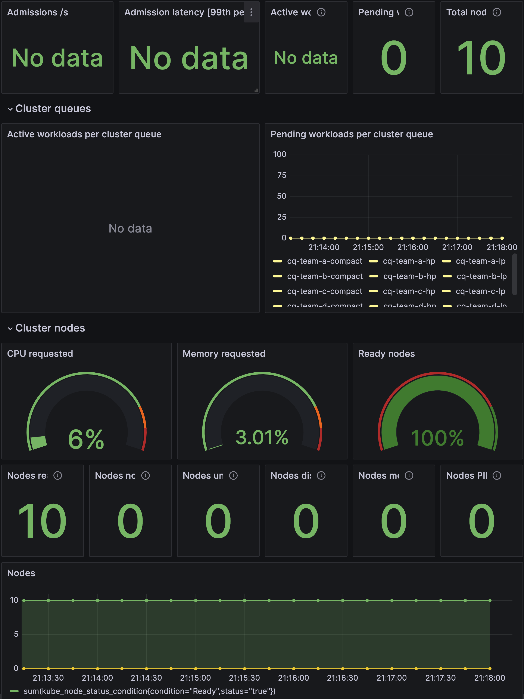
- Deploying Low Priority workloads: Switch to the
low_prioritydirectory and run thecreate_workloads.shscript. This script will connect to the cluster and deploy one Job from each team at a time until all teams have four low priority Jobs submitted (job-0 through job-3).
bash
cd $HOME/ai-on-gke/best-practices/gke-batch-refarch/low_priority && \
./create_workloads.sh
Expected output:
bash
service/team-a-low-priority-svc-0 created
configmap/team-a-low-priority-config-0 created
job.batch/team-a-low-priority-job-0 created
...
service/team-d-low-priority-svc-3 created
configmap/team-d-low-priority-config-3 created
job.batch/team-d-low-priority-job-3 created
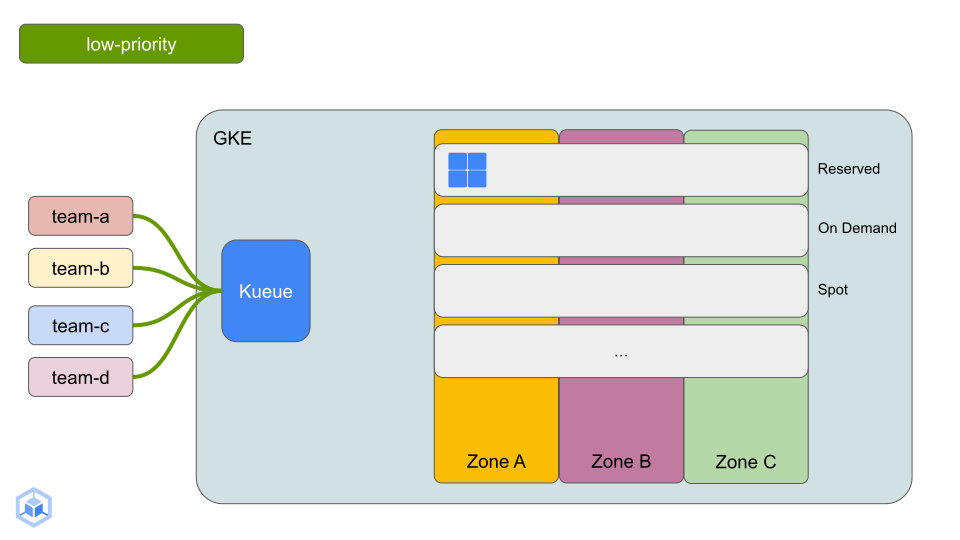
a. List the Jobs running on the GKE cluster across all namespaces, you should see four Jobs from each team created. These Jobs have been admitted by Kueue.
bash
watch kubectl get jobs --all-namespaces
Expected output:
bash
NAMESPACE NAME COMPLETIONS DURATION AGE
team-a team-a-low-priority-job-0 0/2 54s 55s
team-a team-a-low-priority-job-1 0/2 49s 49s
team-a team-a-low-priority-job-2 0/2 43s 43s
team-a team-a-low-priority-job-3 0/2 38s 38s
team-b team-b-low-priority-job-0 0/2 53s 53s
team-b team-b-low-priority-job-1 0/2 47s 48s
team-b team-b-low-priority-job-2 0/2 42s 42s
team-b team-b-low-priority-job-3 0/2 37s 37s
team-c team-c-low-priority-job-0 0/2 52s 52s
team-c team-c-low-priority-job-1 0/2 46s 47s
team-c team-c-low-priority-job-2 0/2 41s 41s
team-c team-c-low-priority-job-3 0/2 36s 36s
team-d team-d-low-priority-job-0 0/2 51s 51s
team-d team-d-low-priority-job-1 0/2 45s 46s
team-d team-d-low-priority-job-2 0/2 40s 40s
team-d team-d-low-priority-job-3 0/2 35s 35s
b. In a new terminal tab, watch the ClusterQueues, you should see four admitted workloads for each team's low priority ClusterQueue. These workloads correspond to the Jobs you saw in the previous step.
bash
watch kubectl get clusterqueues -o wide
Expected output:
bash
NAME COHORT STRATEGY PENDING WORKLOADS ADMITTED WORKLOADS
cq-team-a-compact team-a-b StrictFIFO 0 0
cq-team-a-hp team-a-b StrictFIFO 0 0
cq-team-a-lp team-a-b StrictFIFO 0 4
cq-team-b-compact team-a-b StrictFIFO 0 0
cq-team-b-hp team-a-b StrictFIFO 0 0
cq-team-b-lp team-a-b StrictFIFO 0 4
cq-team-c-compact team-c-d StrictFIFO 0 0
cq-team-c-hp team-c-d StrictFIFO 0 0
cq-team-c-lp team-c-d StrictFIFO 0 4
cq-team-d-compact team-c-d StrictFIFO 0 0
cq-team-d-hp team-c-d StrictFIFO 0 0
cq-team-d-lp team-c-d StrictFIFO 0 4
c. Since the Reserved node pool already has nodes available to run admitted low priority workloads, some of these workloads will be scheduled on the Reserved nodes.
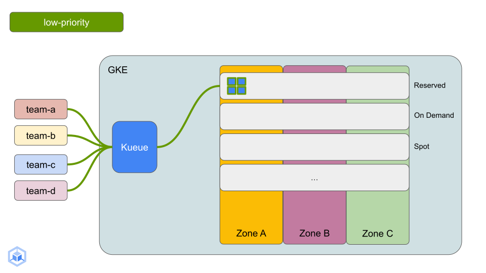
d. In a new terminal tab, watch the cluster nodes. Initially you should see ten nodes, six in the default node pool and four in the reserved node pool.
bash
watch kubectl get nodes
Expected output:
bash
NAME STATUS ROLES AGE VERSION
gke-gke-batch-refarch-default-pool-8bba21a2-3328 Ready <none> 12h v1.28.3-gke.1203001
gke-gke-batch-refarch-default-pool-8bba21a2-bmzg Ready <none> 12h v1.28.3-gke.1203001
gke-gke-batch-refarch-default-pool-9899b2fc-8k19 Ready <none> 12h v1.28.3-gke.1203001
gke-gke-batch-refarch-default-pool-9899b2fc-srxf Ready <none> 12h v1.28.3-gke.1203001
gke-gke-batch-refarch-default-pool-ab9bedc3-gn5j Ready <none> 12h v1.28.3-gke.1203001
gke-gke-batch-refarch-default-pool-ab9bedc3-wht3 Ready <none> 12h v1.28.3-gke.1203001
gke-gke-batch-refarch-reserved-np-866c1d22-djvf Ready <none> 12h v1.28.3-gke.1203001
gke-gke-batch-refarch-reserved-np-866c1d22-p2w7 Ready <none> 12h v1.28.3-gke.1203001
gke-gke-batch-refarch-reserved-np-866c1d22-p42h Ready <none> 12h v1.28.3-gke.1203001
gke-gke-batch-refarch-reserved-np-866c1d22-r6rt Ready <none> 12h v1.28.3-gke.1203001
e. After a short while you should see Spot nodes being added to the Spot node pool to accommodate the low priority Jobs that could not fit on the Reserved node pool (sized for two Jobs at a time).
Expected output:
bash
NAME STATUS ROLES AGE VERSION
gke-gke-batch-refarch-default-pool-8bba21a2-3328 Ready <none> 12h v1.28.3-gke.1203001
gke-gke-batch-refarch-default-pool-8bba21a2-bmzg Ready <none> 12h v1.28.3-gke.1203001
gke-gke-batch-refarch-default-pool-9899b2fc-8k19 Ready <none> 12h v1.28.3-gke.1203001
gke-gke-batch-refarch-default-pool-9899b2fc-srxf Ready <none> 12h v1.28.3-gke.1203001
gke-gke-batch-refarch-default-pool-ab9bedc3-gn5j Ready <none> 12h v1.28.3-gke.1203001
gke-gke-batch-refarch-default-pool-ab9bedc3-wht3 Ready <none> 12h v1.28.3-gke.1203001
gke-gke-batch-refarch-reserved-np-866c1d22-djvf Ready <none> 12h v1.28.3-gke.1203001
gke-gke-batch-refarch-reserved-np-866c1d22-p2w7 Ready <none> 12h v1.28.3-gke.1203001
gke-gke-batch-refarch-reserved-np-866c1d22-p42h Ready <none> 12h v1.28.3-gke.1203001
gke-gke-batch-refarch-reserved-np-866c1d22-r6rt Ready <none> 12h v1.28.3-gke.1203001
gke-gke-batch-refarch-spot-np-fd534d43-2gl8 Ready <none> 102s v1.28.3-gke.1203001
gke-gke-batch-refarch-spot-np-fd534d43-2thb Ready <none> 97s v1.28.3-gke.1203001
gke-gke-batch-refarch-spot-np-fd534d43-4ccx Ready <none> 89s v1.28.3-gke.1203001
gke-gke-batch-refarch-spot-np-fd534d43-69p2 Ready <none> 94s v1.28.3-gke.1203001
gke-gke-batch-refarch-spot-np-fd534d43-7246 Ready <none> 80s v1.28.3-gke.1203001
gke-gke-batch-refarch-spot-np-fd534d43-7rhl Ready <none> 96s v1.28.3-gke.1203001
gke-gke-batch-refarch-spot-np-fd534d43-8267 Ready <none> 95s v1.28.3-gke.1203001
gke-gke-batch-refarch-spot-np-fd534d43-c5x5 Ready <none> 100s v1.28.3-gke.1203001
gke-gke-batch-refarch-spot-np-fd534d43-cc2h Ready <none> 109s v1.28.3-gke.1203001
gke-gke-batch-refarch-spot-np-fd534d43-fsjs Ready <none> 95s v1.28.3-gke.1203001
gke-gke-batch-refarch-spot-np-fd534d43-fsqw Ready <none> 100s v1.28.3-gke.1203001
gke-gke-batch-refarch-spot-np-fd534d43-h9bh Ready <none> 96s v1.28.3-gke.1203001
gke-gke-batch-refarch-spot-np-fd534d43-hshk Ready <none> 69s v1.28.3-gke.1203001
gke-gke-batch-refarch-spot-np-fd534d43-htjv Ready <none> 97s v1.28.3-gke.1203001
gke-gke-batch-refarch-spot-np-fd534d43-j7zc Ready <none> 94s v1.28.3-gke.1203001
gke-gke-batch-refarch-spot-np-fd534d43-jr45 Ready <none> 104s v1.28.3-gke.1203001
gke-gke-batch-refarch-spot-np-fd534d43-l5v2 Ready <none> 90s v1.28.3-gke.1203001
gke-gke-batch-refarch-spot-np-fd534d43-ltv4 Ready <none> 98s v1.28.3-gke.1203001
gke-gke-batch-refarch-spot-np-fd534d43-ptx9 Ready <none> 93s v1.28.3-gke.1203001
gke-gke-batch-refarch-spot-np-fd534d43-q57t Ready <none> 100s v1.28.3-gke.1203001
gke-gke-batch-refarch-spot-np-fd534d43-qlsz Ready <none> 106s v1.28.3-gke.1203001
gke-gke-batch-refarch-spot-np-fd534d43-t5tl Ready <none> 100s v1.28.3-gke.1203001
gke-gke-batch-refarch-spot-np-fd534d43-t62s Ready <none> 105s v1.28.3-gke.1203001
gke-gke-batch-refarch-spot-np-fd534d43-wxrr Ready <none> 91s v1.28.3-gke.1203001
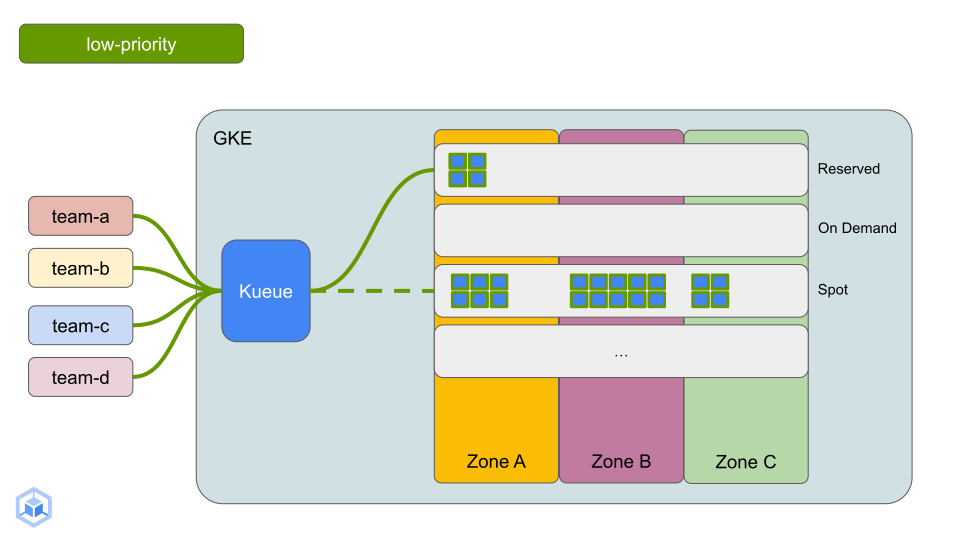
- Deploying High Priority workloads: Switch to the
high_prioritydirectory and run thecreate_workloads.shscript. This script will connect to the cluster and deploy one Job from each team at a time until all teams have four low priority Jobs submitted (job-0 through job-3).
bash
cd $HOME/ai-on-gke/best-practices/gke-batch-refarch/high_priority && \
./create_workloads.sh
Expected output:
bash
service/team-a-high-priority-svc-0 created
configmap/team-a-high-priority-config-0 created
job.batch/team-a-high-priority-job-0 created
...
service/team-d-high-priority-svc-3 created
configmap/team-d-high-priority-config-3 created
job.batch/team-d-high-priority-job-3 created
a. Return to the terminal tab watching the clusterqueues. You should see high-priority workloads being added to the high-priority clusterqueues.
bash
watch kubectl get clusterqueues -o wide
Expected output:
bash
NAME COHORT STRATEGY PENDING WORKLOADS ADMITTED WORKLOADS
cq-team-a-compact team-a-b StrictFIFO 0 0
cq-team-a-hp team-a-b StrictFIFO 2 2
cq-team-a-lp team-a-b StrictFIFO 1 3
cq-team-b-compact team-a-b StrictFIFO 0 0
cq-team-b-hp team-a-b StrictFIFO 2 2
cq-team-b-lp team-a-b StrictFIFO 0 3
cq-team-c-compact team-c-d StrictFIFO 0 0
cq-team-c-hp team-c-d StrictFIFO 2 2
cq-team-c-lp team-c-d StrictFIFO 0 3
cq-team-d-compact team-c-d StrictFIFO 0 0
cq-team-d-hp team-c-d StrictFIFO 2 2
cq-team-d-lp team-c-d StrictFIFO 0 3
b. As high priority workloads are admitted, the low priority workloads running on the Reserved node pool are evicted to make room.
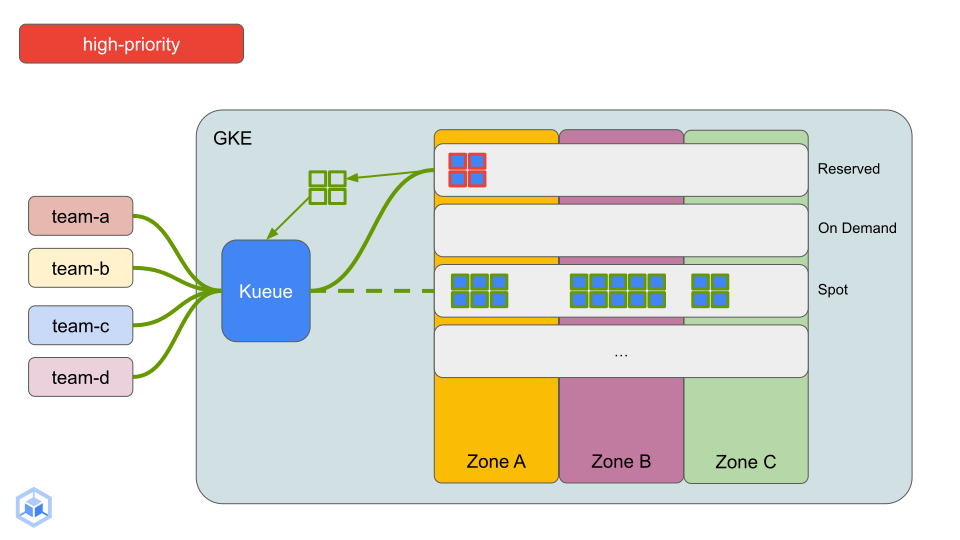
.These low priority workloads are then set to pending and reevaluated by Kueue. They will use the Spot flavor to schedule on to the Spot node pool once new nodes have spun up to accommodate them.
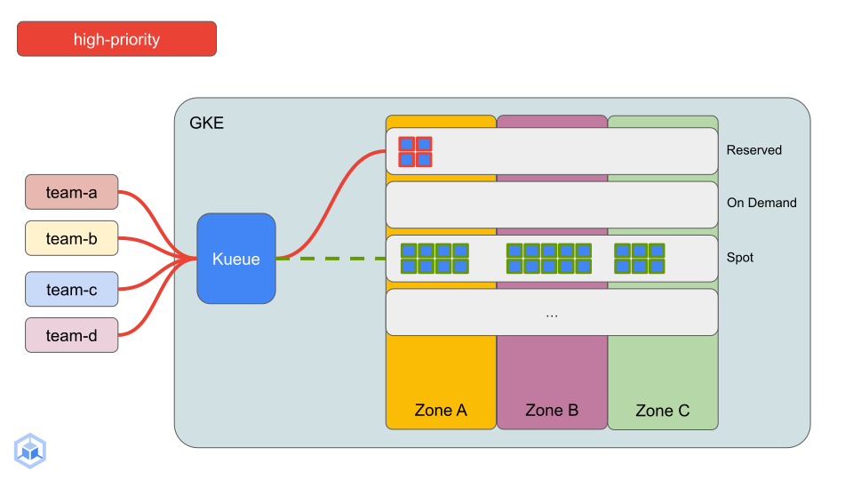
d. Return to the terminal tab watching the cluster nodes, after a short while you should see nodes being added to the On Demand node pool to accommodate the high priority Jobs that could not fit on the Reserved node pool.
Expected output:
bash
NAME STATUS ROLES AGE VERSION
gke-gke-batch-refarch-default-pool-8bba21a2-3328 Ready <none> 12h v1.28.3-gke.1203001
gke-gke-batch-refarch-default-pool-8bba21a2-bmzg Ready <none> 12h v1.28.3-gke.1203001
gke-gke-batch-refarch-default-pool-9899b2fc-8k19 Ready <none> 12h v1.28.3-gke.1203001
gke-gke-batch-refarch-default-pool-9899b2fc-srxf Ready <none> 12h v1.28.3-gke.1203001
gke-gke-batch-refarch-default-pool-ab9bedc3-gn5j Ready <none> 12h v1.28.3-gke.1203001
gke-gke-batch-refarch-default-pool-ab9bedc3-wht3 Ready <none> 12h v1.28.3-gke.1203001
gke-gke-batch-refarch-ondemand-np-48a23fe6-426d Ready <none> 3m25s v1.28.3-gke.1203001
gke-gke-batch-refarch-ondemand-np-48a23fe6-bs59 Ready <none> 3m30s v1.28.3-gke.1203001
gke-gke-batch-refarch-ondemand-np-48a23fe6-vktd Ready <none> 3m24s v1.28.3-gke.1203001
gke-gke-batch-refarch-ondemand-np-48a23fe6-znst Ready <none> 3m30s v1.28.3-gke.1203001
gke-gke-batch-refarch-ondemand-np-8687a394-7dpd Ready <none> 2m39s v1.28.3-gke.1203001
gke-gke-batch-refarch-ondemand-np-8687a394-ggs4 Ready <none> 2m41s v1.28.3-gke.1203001
gke-gke-batch-refarch-ondemand-np-8687a394-qb49 Ready <none> 2m32s v1.28.3-gke.1203001
gke-gke-batch-refarch-ondemand-np-8687a394-x2cq Ready <none> 2m37s v1.28.3-gke.1203001
gke-gke-batch-refarch-reserved-np-866c1d22-djvf Ready <none> 12h v1.28.3-gke.1203001
gke-gke-batch-refarch-reserved-np-866c1d22-p2w7 Ready <none> 12h v1.28.3-gke.1203001
gke-gke-batch-refarch-reserved-np-866c1d22-p42h Ready <none> 12h v1.28.3-gke.1203001
gke-gke-batch-refarch-reserved-np-866c1d22-r6rt Ready <none> 12h v1.28.3-gke.1203001
gke-gke-batch-refarch-spot-np-fd534d43-2gl8 Ready <none> 7m45s v1.28.3-gke.1203001
gke-gke-batch-refarch-spot-np-fd534d43-2thb Ready <none> 7m40s v1.28.3-gke.1203001
gke-gke-batch-refarch-spot-np-fd534d43-4ccx Ready <none> 7m32s v1.28.3-gke.1203001
gke-gke-batch-refarch-spot-np-fd534d43-69p2 Ready <none> 7m37s v1.28.3-gke.1203001
gke-gke-batch-refarch-spot-np-fd534d43-7246 Ready <none> 7m23s v1.28.3-gke.1203001
gke-gke-batch-refarch-spot-np-fd534d43-7rhl Ready <none> 7m39s v1.28.3-gke.1203001
gke-gke-batch-refarch-spot-np-fd534d43-8267 Ready <none> 7m38s v1.28.3-gke.1203001
gke-gke-batch-refarch-spot-np-fd534d43-c5x5 Ready <none> 7m43s v1.28.3-gke.1203001
gke-gke-batch-refarch-spot-np-fd534d43-cc2h Ready <none> 7m52s v1.28.3-gke.1203001
gke-gke-batch-refarch-spot-np-fd534d43-fsjs Ready <none> 7m38s v1.28.3-gke.1203001
gke-gke-batch-refarch-spot-np-fd534d43-fsqw Ready <none> 7m43s v1.28.3-gke.1203001
gke-gke-batch-refarch-spot-np-fd534d43-h9bh Ready <none> 7m39s v1.28.3-gke.1203001
gke-gke-batch-refarch-spot-np-fd534d43-hshk Ready <none> 7m12s v1.28.3-gke.1203001
gke-gke-batch-refarch-spot-np-fd534d43-htjv Ready <none> 7m40s v1.28.3-gke.1203001
gke-gke-batch-refarch-spot-np-fd534d43-j7zc Ready <none> 7m37s v1.28.3-gke.1203001
gke-gke-batch-refarch-spot-np-fd534d43-jr45 Ready <none> 7m47s v1.28.3-gke.1203001
gke-gke-batch-refarch-spot-np-fd534d43-l5v2 Ready <none> 7m33s v1.28.3-gke.1203001
gke-gke-batch-refarch-spot-np-fd534d43-ltv4 Ready <none> 7m41s v1.28.3-gke.1203001
gke-gke-batch-refarch-spot-np-fd534d43-ptx9 Ready <none> 7m36s v1.28.3-gke.1203001
gke-gke-batch-refarch-spot-np-fd534d43-q57t Ready <none> 7m43s v1.28.3-gke.1203001
gke-gke-batch-refarch-spot-np-fd534d43-qlsz Ready <none> 7m49s v1.28.3-gke.1203001
gke-gke-batch-refarch-spot-np-fd534d43-t5tl Ready <none> 7m43s v1.28.3-gke.1203001
gke-gke-batch-refarch-spot-np-fd534d43-t62s Ready <none> 7m48s v1.28.3-gke.1203001
gke-gke-batch-refarch-spot-np-fd534d43-wxrr Ready <none> 7m34s v1.28.3-gke.1203001
The following diagram illustrates scale up in the On Demand node pool:
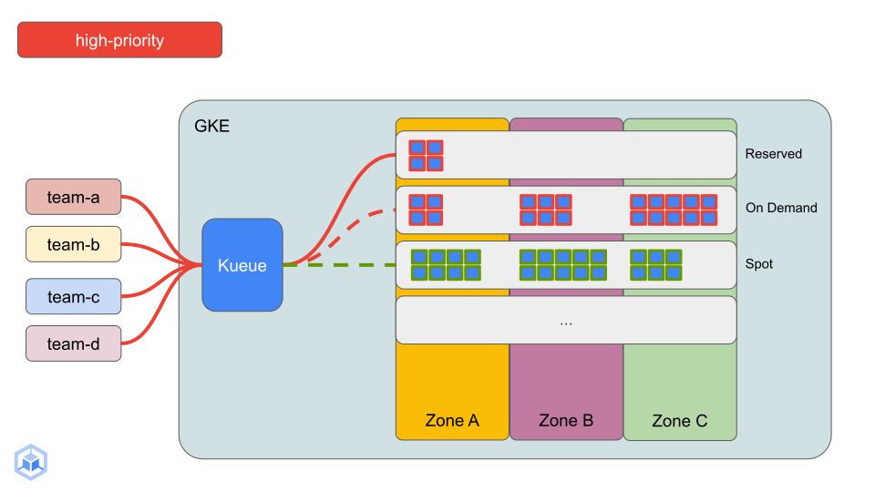
The Kueue dashboard also shows updated node counts, pending and active workloads,and other useful metrics from the batch platform.
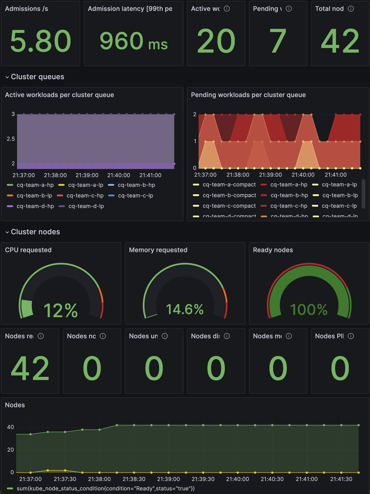
- Deploying compact placement workloads: Switch to the
compact_placementdirectory and run thecreate_workloads.shscript. This script will connect to the cluster and deploy one Job from each team at a time until all teams have four compactly placed Jobs submitted (job-0 through job-3).
bash
cd $HOME/ai-on-gke/best-practices/gke-batch-refarch/compact_placement && \
./create_workloads.sh
Expected output:
bash
service/team-a-compact-svc-0 created
configmap/team-a-compact-config-0 created
job.batch/team-a-compact-job-0 created
...
service/team-d-compact-svc-3 created
configmap/team-d-compact-config-3 created
job.batch/team-d-compact-job-3 created
a. Return to the terminal tab watching the clusterqueues, you should see submitted compact workloads being pending and admitted to the compact clusterqueues for all four teams.
Expected output:
bash
NAME COHORT STRATEGY PENDING WORKLOADS ADMITTED WORKLOADS
cq-team-a-compact team-a-b StrictFIFO 3 1
cq-team-a-hp team-a-b StrictFIFO 0 2
cq-team-a-lp team-a-b StrictFIFO 0 0
cq-team-b-compact team-a-b StrictFIFO 2 1
cq-team-b-hp team-a-b StrictFIFO 0 2
cq-team-b-lp team-a-b StrictFIFO 0 0
cq-team-c-compact team-c-d StrictFIFO 3 1
cq-team-c-hp team-c-d StrictFIFO 1 2
cq-team-c-lp team-c-d StrictFIFO 0 0
cq-team-d-compact team-c-d StrictFIFO 2 1
cq-team-d-hp team-c-d StrictFIFO 0 2
cq-team-d-lp team-c-d StrictFIFO 0 1
b. As these Jobs are admitted by Kueue, they will become Unschedulable, meaning that the cluster does not have the resources these workloads are asking for. However, since the cluster is configured with Node Auto Provisioning, GKE will create and scale a node pool purpose built for each Job based on the resource requests and limits. Once the Job is complete, the node pool will be cleaned up by GKE automatically, eliminating unnecessary spend.
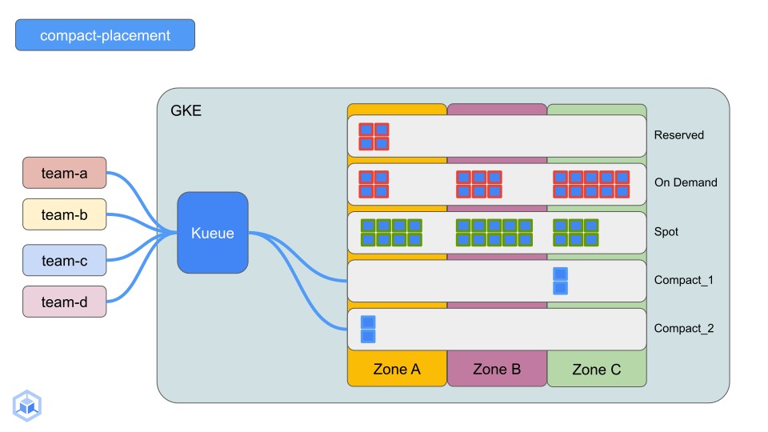
c. Return to the terminal tab watching the cluster nodes, after a short while you should see nodes being created in auto-provisioned Spot node pools to accommodate the compactly placed Jobs that could not find any A100 GPUs in the node pools present on the cluster.
Expected output:
bash
NAME STATUS ROLES AGE VERSION
gke-gke-batch-refarc-team-a-0-compact-4391522a-k57w Ready <none> 5m14s v1.28.3-gke.1203001
gke-gke-batch-refarc-team-a-0-compact-4391522a-zqcr Ready <none> 5m12s v1.28.3-gke.1203001
gke-gke-batch-refarc-team-b-0-compact-5ed4b762-7lsv Ready <none> 3m26s v1.28.3-gke.1203001
gke-gke-batch-refarc-team-b-0-compact-5ed4b762-8h7n Ready <none> 3m26s v1.28.3-gke.1203001
gke-gke-batch-refarc-team-c-0-compact-a2204c20-cwrt Ready <none> 3m44s v1.28.3-gke.1203001
gke-gke-batch-refarc-team-c-0-compact-a2204c20-g4lz Ready <none> 4m7s v1.28.3-gke.1203001
gke-gke-batch-refarc-team-d-0-compact-9f10df61-fwpj Ready <none> 2m49s v1.28.3-gke.1203001
gke-gke-batch-refarc-team-d-0-compact-9f10df61-jw6k Ready <none> 2m49s v1.28.3-gke.1203001
gke-gke-batch-refarch-default-pool-8bba21a2-3328 Ready <none> 12h v1.28.3-gke.1203001
gke-gke-batch-refarch-default-pool-8bba21a2-bmzg Ready <none> 12h v1.28.3-gke.1203001
gke-gke-batch-refarch-default-pool-9899b2fc-8k19 Ready <none> 12h v1.28.3-gke.1203001
gke-gke-batch-refarch-default-pool-9899b2fc-srxf Ready <none> 12h v1.28.3-gke.1203001
gke-gke-batch-refarch-default-pool-ab9bedc3-gn5j Ready <none> 12h v1.28.3-gke.1203001
gke-gke-batch-refarch-default-pool-ab9bedc3-wht3 Ready <none> 12h v1.28.3-gke.1203001
gke-gke-batch-refarch-ondemand-np-48a23fe6-426d Ready <none> 17m v1.28.3-gke.1203001
gke-gke-batch-refarch-ondemand-np-48a23fe6-bs59 Ready <none> 17m v1.28.3-gke.1203001
gke-gke-batch-refarch-ondemand-np-48a23fe6-vktd Ready <none> 17m v1.28.3-gke.1203001
gke-gke-batch-refarch-ondemand-np-8687a394-7dpd Ready <none> 16m v1.28.3-gke.1203001
gke-gke-batch-refarch-ondemand-np-8687a394-ggs4 Ready <none> 16m v1.28.3-gke.1203001
gke-gke-batch-refarch-ondemand-np-8687a394-qb49 Ready <none> 16m v1.28.3-gke.1203001
gke-gke-batch-refarch-reserved-np-866c1d22-djvf Ready <none> 12h v1.28.3-gke.1203001
gke-gke-batch-refarch-reserved-np-866c1d22-p2w7 Ready <none> 12h v1.28.3-gke.1203001
gke-gke-batch-refarch-reserved-np-866c1d22-p42h Ready <none> 12h v1.28.3-gke.1203001
gke-gke-batch-refarch-reserved-np-866c1d22-r6rt Ready <none> 12h v1.28.3-gke.1203001
- Deploying JobSet workloads: Switch to the
jobsetdirectory and run thecreate_workloads.shscript. This script will connect to the cluster and deploy one JobSet from each team at a time until all teams have three JobSets submitted (jobset-0 through jobset-3).
bash
cd $HOME/ai-on-gke/best-practices/gke-batch-refarch/jobset && \
./create_workloads.sh
Expected output:
bash
jobset.jobset.x-k8s.io/team-a-jobset-0 created
jobset.jobset.x-k8s.io/team-b-jobset-0 created
jobset.jobset.x-k8s.io/team-c-jobset-0 created
jobset.jobset.x-k8s.io/team-d-jobset-0 created
...
jobset.jobset.x-k8s.io/team-a-jobset-3 created
jobset.jobset.x-k8s.io/team-b-jobset-3 created
jobset.jobset.x-k8s.io/team-c-jobset-3 created
jobset.jobset.x-k8s.io/team-d-jobset-3 created
a. Return to the terminal tab watching the clusterqueues, you should see submitted JobSet workloads being pending and admitted to the low priority clusterqueues for all four teams.
Expected output:
bash
NAME COHORT STRATEGY PENDING WORKLOADS ADMITTED WORKLOADS
cq-team-a-compact team-a-b StrictFIFO 2 1
cq-team-a-hp team-a-b StrictFIFO 0 0
cq-team-a-lp team-a-b StrictFIFO 0 4
cq-team-b-compact team-a-b StrictFIFO 2 0
cq-team-b-hp team-a-b StrictFIFO 0 0
cq-team-b-lp team-a-b StrictFIFO 0 4
cq-team-c-compact team-c-d StrictFIFO 0 1
cq-team-c-hp team-c-d StrictFIFO 0 1
cq-team-c-lp team-c-d StrictFIFO 0 4
cq-team-d-compact team-c-d StrictFIFO 2 1
cq-team-d-hp team-c-d StrictFIFO 0 0
cq-team-d-lp team-c-d StrictFIFO 0 4
- Deploying workloads to DWS: This section of the reference architecture will introduce you to Dynamic Workload Scheduler (blog, docs). DWS supports all-or-nothing scheduling, allowing you to procure all the accelerators needed for your workload all at once instead of acquiring partial resources and waiting to get the full set before running the workload.
The examples shown will deploy one model training job for team-a seeking A100 GPUs to fine-tune the Gemma 2B model and one job from team-b seeking H100 GPUs to fine-tune the Gemma 7B model, in both cases the model is fine-tuned to output SQL when asked a question in natural language. These example workloads are adapted from the example published here.
The model weights are download from and uploaded to Hugging Face. In order to access these weights, you will need your Hugging Face token which can be generated here. Once you have the token, export it as an environment variable by replacing YOUR_HUGGING_FACE_TOKEN with your token and create the Kubernetes Secrets for team-a and team-b for their respective workloads to be able to access Hugging Face.
```bash export HF_TOKEN=YOUR_HUGGING_FACE_TOKEN && \
kubectl create secret generic hf-secret \ --from-literal=hf_api_token=${HF_TOKEN} \ --dry-run=client -o yaml | kubectl -n team-a apply -f - && \
kubectl create secret generic hf-secret \ --from-literal=hf_api_token=${HF_TOKEN} \ --dry-run=client -o yaml | kubectl -n team-b apply -f - ```
Next, configure Kueue to use DWS and deploy the workloads by switching to the dws directory, applying the kueue-dws-config.yaml and running the create_workloads.sh script:
bash
cd $HOME/ai-on-gke/best-practices/gke-batch-refarch/dws && \
kubectl apply -f kueue-dws-config.yaml && \
./create_workloads.sh
Expected output:
bash
...
job.batch/finetune-gemma-2xa100 created
job.batch/finetune-gemma-8xh100 created
a. Return to the terminal tab watching the clusterqueues, you should see submitted DWS workloads being pending and after a while admitted to the DWS clusterqueue for both team-a and team-b.
Expected output:
bash
NAME COHORT STRATEGY PENDING WORKLOADS ADMITTED WORKLOADS
cq-team-a-compact team-a-b StrictFIFO 2 1
cq-team-a-hp team-a-b StrictFIFO 0 0
cq-team-a-lp team-a-b StrictFIFO 0 4
cq-team-b-compact team-a-b StrictFIFO 2 0
cq-team-b-hp team-a-b StrictFIFO 0 0
cq-team-b-lp team-a-b StrictFIFO 0 4
cq-team-c-compact team-c-d StrictFIFO 0 1
cq-team-c-hp team-c-d StrictFIFO 0 1
cq-team-c-lp team-c-d StrictFIFO 0 4
cq-team-d-compact team-c-d StrictFIFO 2 1
cq-team-d-hp team-c-d StrictFIFO 0 0
cq-team-d-lp team-c-d StrictFIFO 0 4
dws-cluster-queue BestEffortFIFO 0 2
b. At this time all the workloads have been submitted to the batch platform, and will continue to process in the order decided by Kueue.
c. Head over to the GPU monitoring dashboard you opened earlier. You should see charts displaying useful GPU utilization data from the batch platform for example:
-
Number and type of GPUs in the cluster over time
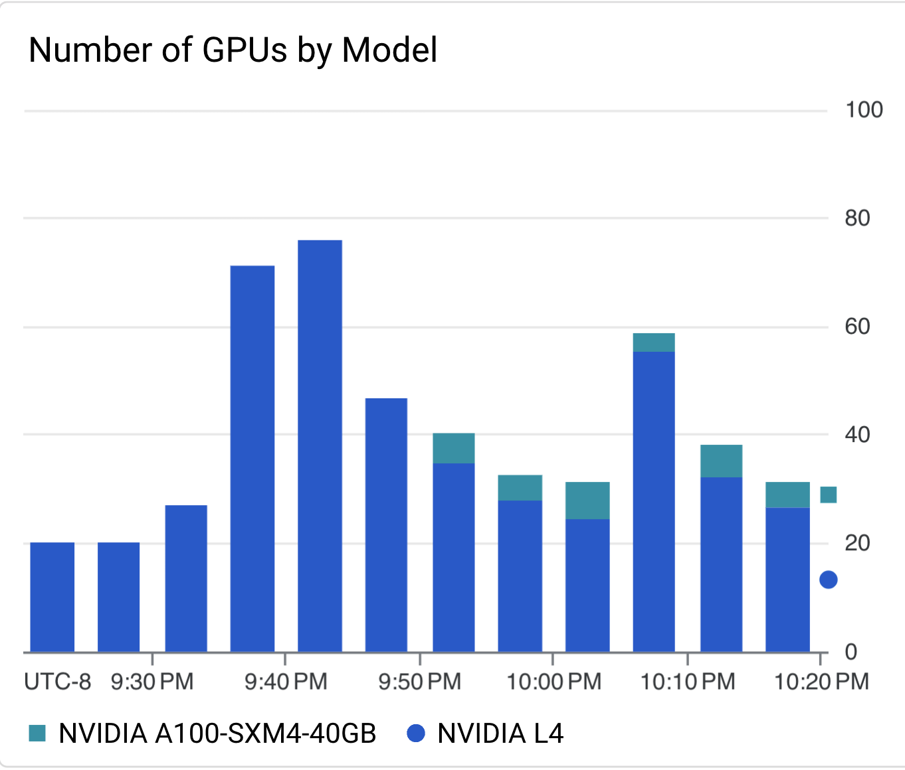
-
Distribution (heatmap) of GPU utilization
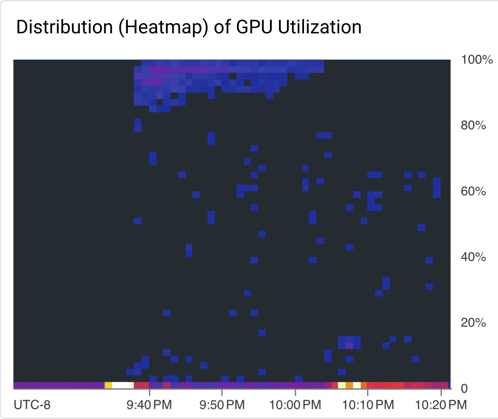
- Distribution (heatmap) of GPU memory utilization
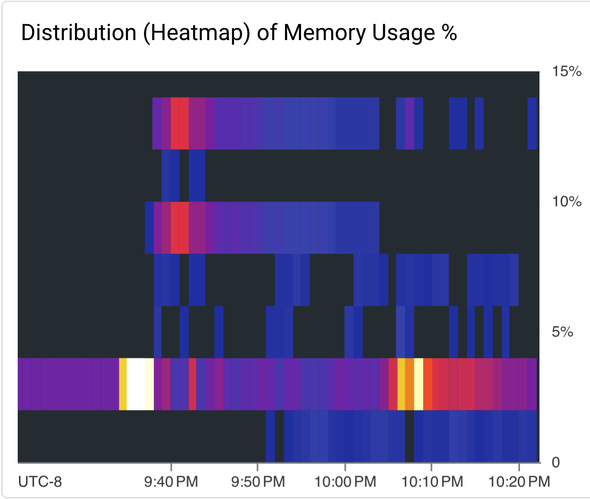
d. Return to the terminal tab watching Jobs across all namespaces, after a while you should see all Jobs completed.
Expected output:
bash
NAMESPACE NAME COMPLETIONS DURATION AGE
team-a finetune-gemma-2xa100 1/1 8m17s 15m
team-a team-a-compact-job-0 2/2 7m22s 42m
team-a team-a-compact-job-1 2/2 11m 42m
team-a team-a-compact-job-2 2/2 7m52s 42m
team-a team-a-compact-job-3 2/2 7m15s 42m
team-a team-a-high-priority-job-0 2/2 8m37s 53m
team-a team-a-high-priority-job-1 2/2 15m 53m
team-a team-a-high-priority-job-2 2/2 4m38s 53m
team-a team-a-high-priority-job-3 2/2 4m38s 53m
team-a team-a-jobset-0-worker-0 2/2 18m 24m
team-a team-a-jobset-1-worker-0 2/2 5m4s 26m
team-a team-a-jobset-2-worker-0 2/2 91s 22m
team-a team-a-jobset-3-worker-0 2/2 5m 26m
team-a team-a-low-priority-job-0 2/2 3m31s 58m
team-a team-a-low-priority-job-1 2/2 11m 58m
team-a team-a-low-priority-job-2 2/2 10m 58m
team-a team-a-low-priority-job-3 2/2 10m 57m
team-b finetune-gemma-8xh100 1/1 10m8s 15m
team-b team-b-compact-job-0 2/2 8m56s 42m
team-b team-b-compact-job-1 2/2 7m28s 42m
team-b team-b-compact-job-2 2/2 7m16s 42m
team-b team-b-compact-job-3 2/2 8m3s 42m
team-b team-b-high-priority-job-0 2/2 9m 53m
team-b team-b-high-priority-job-1 2/2 7m34s 53m
team-b team-b-high-priority-job-2 2/2 13m 53m
team-b team-b-high-priority-job-3 2/2 4m52s 53m
team-b team-b-jobset-0-worker-0 2/2 5m25s 26m
team-b team-b-jobset-1-worker-0 2/2 3m37s 4m21s
team-b team-b-jobset-2-worker-0 2/2 5m2s 26m
team-b team-b-jobset-3-worker-0 2/2 5m10s 26m
team-b team-b-low-priority-job-0 2/2 3m40s 58m
team-b team-b-low-priority-job-1 2/2 11m 58m
team-b team-b-low-priority-job-2 2/2 12m 58m
team-b team-b-low-priority-job-3 2/2 10m 57m
team-c team-c-compact-job-0 2/2 8m39s 42m
team-c team-c-compact-job-1 2/2 7m6s 42m
team-c team-c-compact-job-2 2/2 7m12s 42m
team-c team-c-compact-job-3 2/2 7m11s 42m
team-c team-c-high-priority-job-0 2/2 28m 53m
team-c team-c-high-priority-job-1 2/2 11m 53m
team-c team-c-high-priority-job-2 2/2 3m36s 53m
team-c team-c-high-priority-job-3 2/2 3m30s 53m
team-c team-c-jobset-0-worker-0 2/2 3m37s 11m
team-c team-c-jobset-1-worker-0 2/2 3m33s 16m
team-c team-c-jobset-2-worker-0 2/2 5m2s 26m
team-c team-c-jobset-3-worker-0 2/2 3m38s 18m
team-c team-c-low-priority-job-0 2/2 2m46s 58m
team-c team-c-low-priority-job-1 2/2 11m 58m
team-c team-c-low-priority-job-2 2/2 9m50s 58m
team-c team-c-low-priority-job-3 2/2 10m 57m
team-d team-d-compact-job-0 2/2 9m50s 42m
team-d team-d-compact-job-1 2/2 7m34s 42m
team-d team-d-compact-job-2 2/2 7m42s 42m
team-d team-d-compact-job-3 2/2 7m13s 42m
team-d team-d-high-priority-job-0 2/2 10m 53m
team-d team-d-high-priority-job-1 2/2 27m 53m
team-d team-d-high-priority-job-2 2/2 6m16s 53m
team-d team-d-high-priority-job-3 2/2 6m22s 53m
team-d team-d-jobset-0-worker-0 2/2 5m3s 26m
team-d team-d-jobset-1-worker-0 2/2 97s 22m
team-d team-d-jobset-2-worker-0 2/2 93s 22m
team-d team-d-jobset-3-worker-0 2/2 16m 22m
team-d team-d-low-priority-job-0 2/2 2m57s 58m
team-d team-d-low-priority-job-1 2/2 10m 58m
team-d team-d-low-priority-job-2 2/2 19m 58m
team-d team-d-low-priority-job-3 2/2 17m 57m
e. Return to the terminal tab watching the clusterqueues, you should see no workloads pending or admitted.
Expected output:
bash
NAME COHORT STRATEGY PENDING WORKLOADS ADMITTED WORKLOADS
cq-team-a-compact team-a-b StrictFIFO 0 0
cq-team-a-hp team-a-b StrictFIFO 0 0
cq-team-a-lp team-a-b StrictFIFO 0 0
cq-team-b-compact team-a-b StrictFIFO 0 0
cq-team-b-hp team-a-b StrictFIFO 0 0
cq-team-b-lp team-a-b StrictFIFO 0 0
cq-team-c-compact team-c-d StrictFIFO 0 0
cq-team-c-hp team-c-d StrictFIFO 0 0
cq-team-c-lp team-c-d StrictFIFO 0 0
cq-team-d-compact team-c-d StrictFIFO 0 0
cq-team-d-hp team-c-d StrictFIFO 0 0
cq-team-d-lp team-c-d StrictFIFO 0 0
dws-cluster-queue BestEffortFIFO 0 0
f. Return to the terminal tab watching the nodes, you should see GKE shrink the cluster back down to the initial state of ten nodes, six in the default node pool and four in the reserved node pool.
Expected output:
bash
NAME STATUS ROLES AGE VERSION
gke-gke-batch-refarch-default-pool-8bba21a2-3328 Ready <none> 13h v1.28.3-gke.1203001
gke-gke-batch-refarch-default-pool-8bba21a2-bmzg Ready <none> 13h v1.28.3-gke.1203001
gke-gke-batch-refarch-default-pool-9899b2fc-8k19 Ready <none> 13h v1.28.3-gke.1203001
gke-gke-batch-refarch-default-pool-9899b2fc-srxf Ready <none> 13h v1.28.3-gke.1203001
gke-gke-batch-refarch-default-pool-ab9bedc3-gn5j Ready <none> 13h v1.28.3-gke.1203001
gke-gke-batch-refarch-default-pool-ab9bedc3-wht3 Ready <none> 13h v1.28.3-gke.1203001
gke-gke-batch-refarch-reserved-np-866c1d22-djvf Ready <none> 13h v1.28.3-gke.1203001
gke-gke-batch-refarch-reserved-np-866c1d22-p2w7 Ready <none> 13h v1.28.3-gke.1203001
gke-gke-batch-refarch-reserved-np-866c1d22-p42h Ready <none> 13h v1.28.3-gke.1203001
gke-gke-batch-refarch-reserved-np-866c1d22-r6rt Ready <none> 13h v1.28.3-gke.1203001
Clean up
- The easiest way to prevent continued billing for the resources that you created for this tutorial is to delete the project you created for the tutorial. Run the following commands from Cloud Shell:
bash
gcloud config unset project && \
echo y | gcloud projects delete $PROJECT_ID
- If the project needs to be left intact, another option is to destroy the infrastructure created for this tutorial using Cloud Build. Note, this does not destroy the Cloud Storage bucket containing the Terraform state, the artifact registry used to host container images or the IAM bindings and service enablement created via the
create-platform.shscript.
bash
cd $HOME/ai-on-gke/best-practices/gke-batch-refarch && \
./destroy-platform.sh